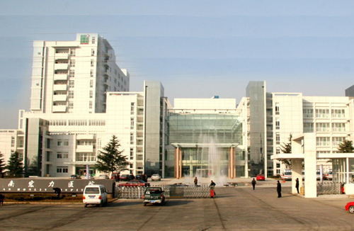

石棉建县之前的1951年6月20日，西康省雅安专员公署卫生科派出2名医生来到县城所在地筹建农场医务室，6月25日，在一间15平米的茅草房内正式开展工作，石棉县人民医院的前身就诞生在这一天。60多年来，医院几代人风雨兼程，在这片红色热土上传承救死扶伤、为人民服务的宗旨，在漫漫征程中茁壮成长。改革开放中勇于弄潮，“立足石棉、辐射周边”建设区域医疗健康服务中心，谱写医改新篇章。新时代不忘初心继续前行，创建三级乙等综合医院搭平台， “惜缘同舟.德术共谐”、为健康中国再攀高峰。
改革开放以来，石医人始终传承着救死扶伤、为人民服务的宗旨，励精图治、锐意改革，开始了医院创新发展的探索，期间有曲折、有坎坷、有成功、有失败，始终一路前行。 “惜缘同舟.德术共谐”、为健康中国再攀高峰。
改革开放以来，石医人始终传承着救死扶伤、为人民服务的宗旨，励精图治、锐意改革，开始了医院创新发展的探索，期间有曲折、有坎坷、有成功、有失败，始终一路前行。 “惜缘同舟.德术共谐”、为健康中国再攀高峰。